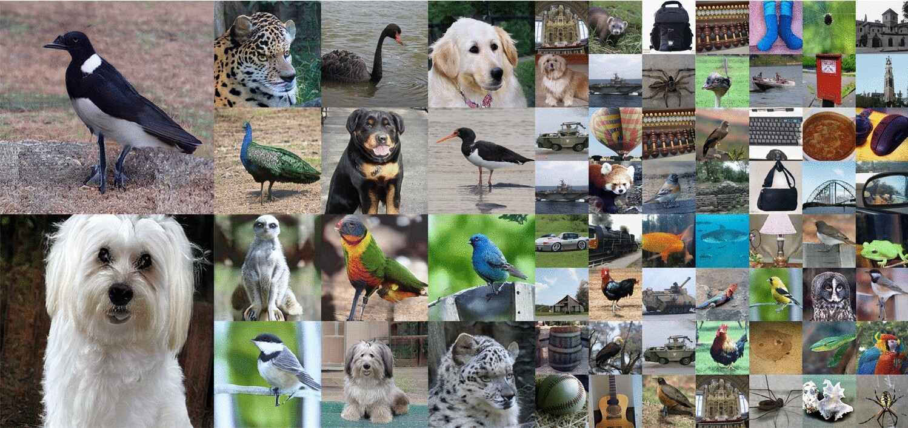
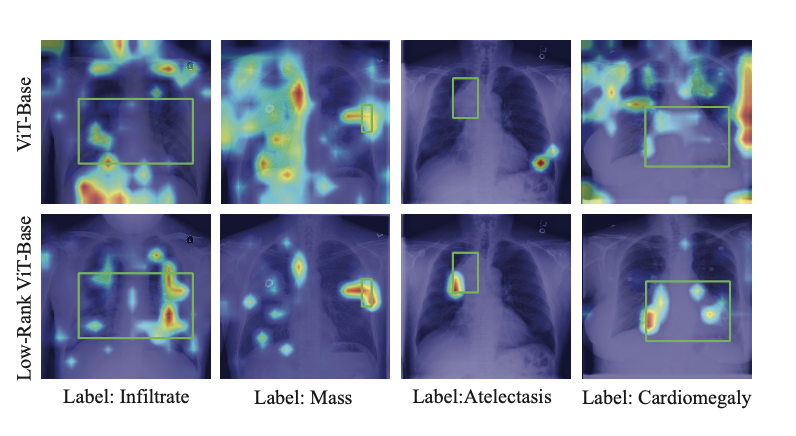
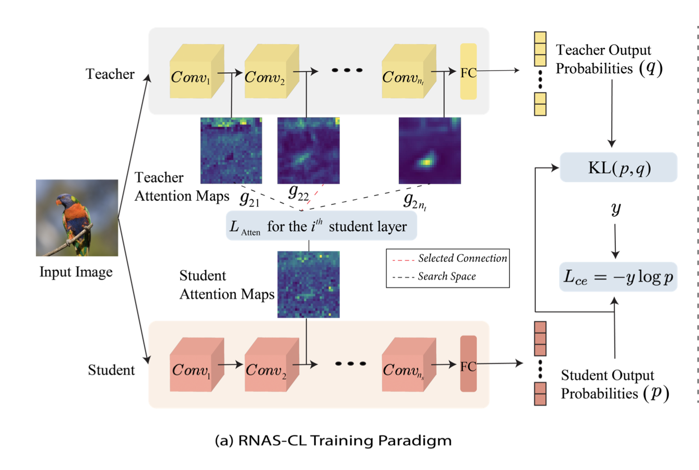
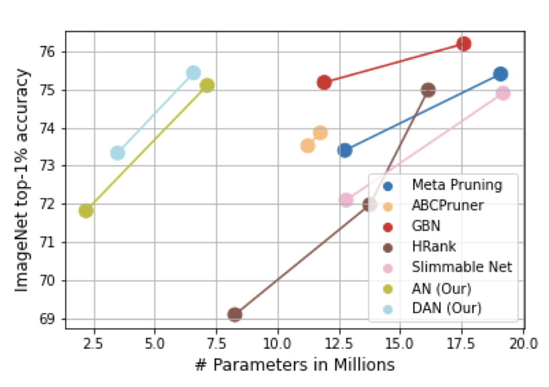

Utkarsh Nath
I am a PhD Candidate in the School of Computing and Augmented Intelligence, at Arizona State University. I work as a research assistant in the Geometric Media Lab, under the expert guidance of Dr. Pavan Turaga.
My research spans Computer Vision and Generative AI, with recent focus on 3D asset generation, text-to-3D systems, and retrieval-augmented generation (RAG) for enterprise applications.
Let's connect! unath@asu.edu
News
- New![Dec 2025] Initiated patent filing for the Agentic Memory RAG (AMRAG) framework developed during my LinkedIn internship.
- New![Oct 2025] Submitted DecompDreamer (Structured 3D Asset Generation) to ICLR 2026.
- [Aug 2025] Filed U.S. Provisional Patent for MT3D (Deep Geometric Moments), accepted at WACV 2025.
- [Aug 2025] Successfully concluded PhD Research Internship at LinkedIn (Mountain View), achieving 33% higher accuracy and 150× cost reduction on recruiter pipelines.
- [May 2025] Joined LinkedIn (Mountain View) as a PhD Research Intern in the Generative AI team.
- [Mar 2025] Paper on promoting geometric consistency for text-to-3D generation models published at WACV 2025.
Recent Industrial Research Experience
LinkedIn
(May 2025 - Aug 2025)
PhD GenAI Research Intern ⚙️ Patent Pending
- Proposed Agentic Memory RAG (AMRAG): a domain-aware RAG framework combining semantic and relational memory within a schema-bounded planning paradigm for global query resolution.
- Designed a dual-memory indexing strategy using embedding-based semantic memory and relational storage, eliminating expensive LLM calls at ingestion time.
- Developed a retrieval-time compiler that transforms each query into a deterministic DAG with three bounded operations: Semantic Search, Relational Query, and LLM Synthesis.
- Outperformed state-of-the-art RAG pipelines on LinkedIn Recruiter data, achieving 33% higher accuracy, 2.6× faster indexing, and up to 150× lower cost.
Selected Publications



Polynomial Implicit Neural Framework for Promoting Shape Awareness in Generative Models
International Journal of Computer Vision (IJCV), 2024


RNAS-CL: Robust Neural Architecture Search by Cross-Layer Knowledge Distillation
International Journal of Computer Vision (IJCV), 2024
UAI 2024

Adjoined Networks: A Training Paradigm with Applications to Network Compression
AAAI Spring Symposium, 2022
Work Experience
Samsung Research
(July 2018 - July 2019)
Software Engineer
- Led a team of three to build a mobile application to interact and control internal functioning of Samsung Smart TV through wireless (wifi-direct) and wired connection.
- Features of application involved controlling factory settings, fetching serial logs, running internal tests and fixing them.
Coding Blocks
(Aug 2017 - July 2019)
Algorithm Instructor
- Conducted Launchpad course for C++: Data Structures, Algorithms, Object Oriented Programming.
- Taught batch of 60 students at a time: includes preparing assignments, quizzes, doubt-solving sessions.
Google Summer of Code / FOSSASIA
(May 2017 - Aug 2017)
Student Developer
- Worked on Open-Event project, which aims to develop automated tool for creation of app and website for conferences. Part of the team responsible for frontend development and designing of the tool.
- Used Semantic UI components to build responsive UI, EmberJS in back-end and GitHub for version control.
Education
Arizona State University
(Expected May 2026)
Doctor of Philosophy, Computer Science
New York University
(May 2021)
Master of Science, Computer Science
Delhi Technological University
(May 2018)
Bachelor of Technology, Information Technology
Service
Reviewing
- NeurIPS 2024, 2025
- ICLR 2025, 2026
- WACV 2025
- ICML 2025
- IEEE Transactions on Information Forensics and Security
- IEEE Transactions on Pattern Analysis and Machine Intelligence (TPAMI)
Teaching Assistant
- Data Structures and Algorithms (CSE 310, ASU)
- Foundation of Machine Learning (CSE 475, ASU)
- Statistical Machine Learning (CSE 575, ASU)
- Introduction to Programming (CS 1114, NYU)
Patents
- Deep Geometric Moment for 3D Generative AI
U.S. Provisional Pat. Ser. No. 63/860,593, filed August 2025 - Method and System for Guided Breathing from Audio Data
U.S. Provisional Pat. Ser. No. 63/087,930, filed October 2020